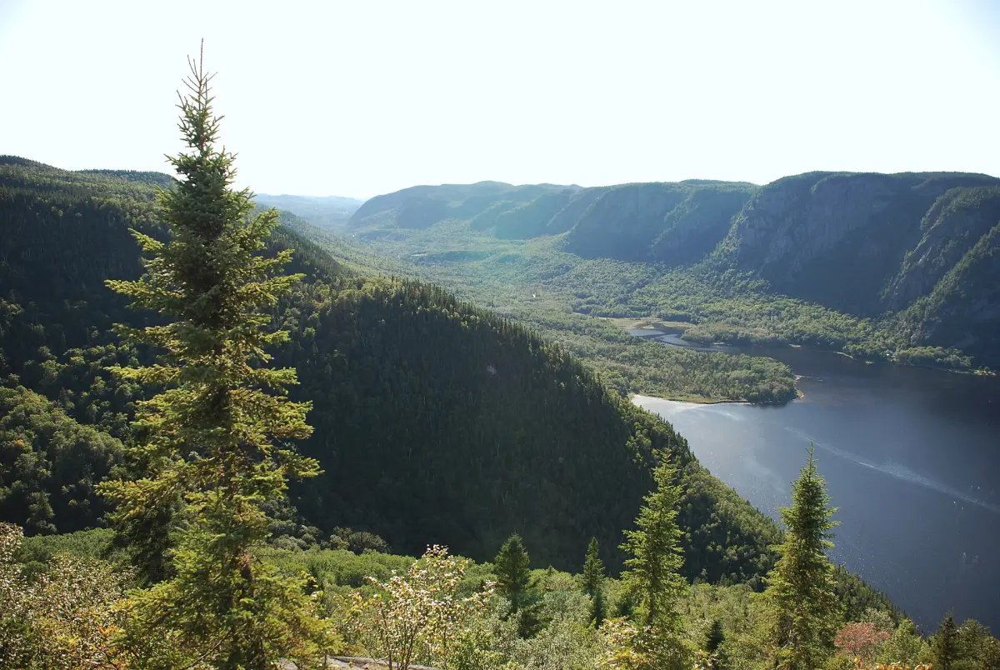
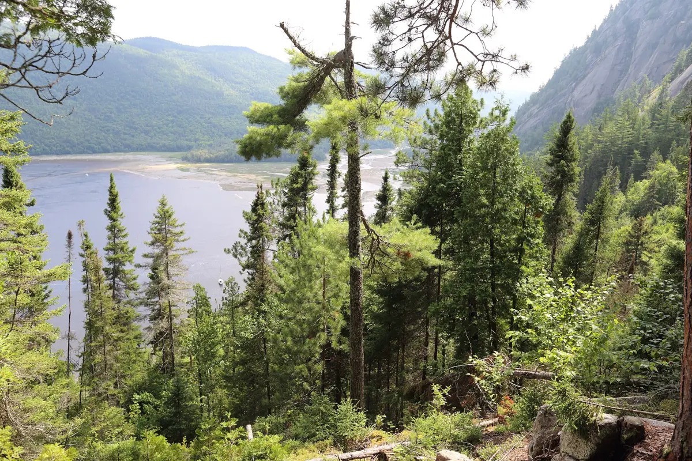

Sentier de la Statue, above the Saguenay Fjord
Last updated: November 21, 2026
From Baie-Éternité, a forest trail climbs to the statue of Notre-Dame-du-Saguenay, set on a ledge of Cap Trinité high above the fjord since 1881.
- Distance
- About 7.6 km return, or 3.6 km return to the Bellevue lookout
- Elevation gain
- About 600 m in all
- Time
- 3 to 4 h, about 2 h to Bellevue
- Difficulty
- Intermediate to difficult
- Start
- Baie-Éternité discovery and service centre
- Season
- Late May to mid-October
Map

Elevation profile

The trail
The trail leaves the Baie-Éternité centre and climbs into the forest of Cap Trinité. The first part is the steepest; at the Bellevue lookout, the bay and the cliffs of Cap Éternité open up below you, a good place to stop or turn back.
Beyond, the trail keeps climbing over the cape, then comes down towards the fjord to the statue of Notre-Dame-du-Saguenay, raised in 1881 as a thank-you offering. It stands on its ledge high above the water, facing the boats that sail up the fjord.
Come back the same way: the climb back over the cape is part of the day.
Good to know
- Ups and downs. The trail goes up and down both ways: count the effort, not just the distance.
- See it from the water too. Boat cruises on the fjord pass right below the statue.
- Season. The trail is recommended from late May to mid-October.
- Park access. An entry fee applies (free for children 17 and under). Check conditions on sepaq.com.
Photos




Keep the day with Arpente
Tap record at the start and put your iPhone in your pocket. Arpente draws your route and measures the distance, time and elevation gain, even with the screen off. Add a photo and a note, and the outing stays in your journal. Discover Arpente.
Other outings
 Mont Albert11.6 km return by the north side, or a 17.3 km loop
Mont Albert11.6 km return by the north side, or a 17.3 km loop Acropole des DraveursAbout 10.4 km return to the first summit, 11.2 km to the third
Acropole des DraveursAbout 10.4 km return to the first summit, 11.2 km to the third Lachine Canal14.5 km one way, from the Old Port to Lachine
Lachine Canal14.5 km one way, from the Old Port to Lachine Mount RoyalAbout 1.4 km from the top of rue Peel to the lookout, about 2 km to the cross
Mount RoyalAbout 1.4 km from the top of rue Peel to the lookout, about 2 km to the cross
The route on the map is indicative, computed with BRouter on OpenStreetMap data (© OpenStreetMap contributors, ODbL); elevations from SRTM. It doesn’t replace the park’s official map. Distances, elevation and times in the table come from park sources: check conditions before you go.